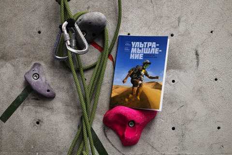
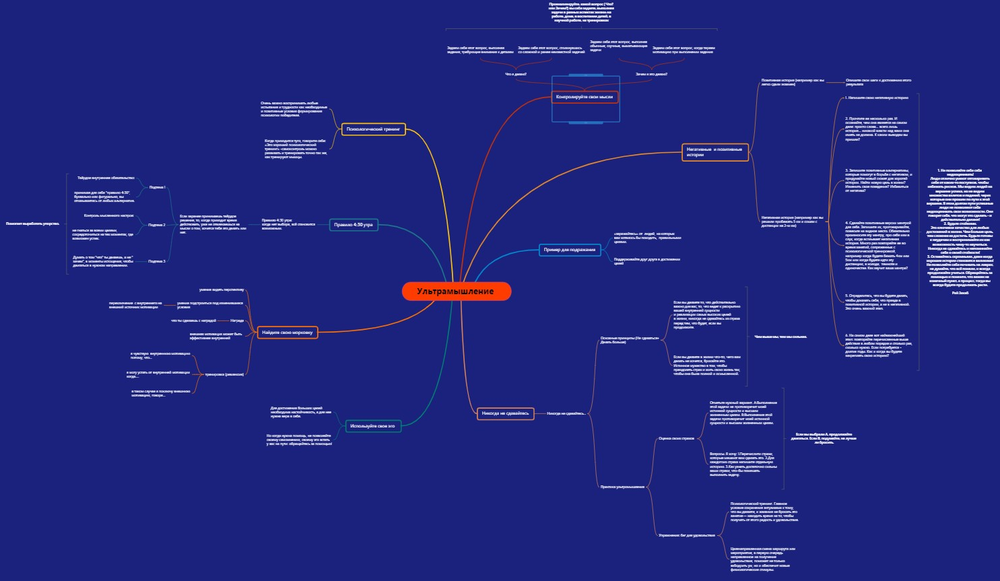

Ультамышление №12

О книге
Профессиональный ультрамарафонец рассказывает, какие принципы позволяют выдерживать запредельные нагрузки и как их можно применить не только в спорте, но и в жизни.
Трэвис Мейси прошел более сотни сверхсложных испытаний на выносливость и выиграл невероятный Leadman — серию длинных беговых и велосипедных гонок, проходящую на большой высоте и заканчивающуюся 100 милями на велосипеде и трейловым ультрамарафоном на ту же дистанцию. Он смог достичь этого без выдающейся врожденной силы, скорости или гибкости, без допинга и каких-либо технологий.
Так в чем же его секрет? В «ультра-мышлении», 8 установках и принципах, которые можно применять и в спорте, и в жизни — таких, например, как «Это все хорошая психологическая подготовка», «Когда у вас нет выбора, все возможно» и «Никогда не сдавайтесь — кроме тех случаев, когда должны это сделать».
Эти принципы помогли автору пройти тяжелые гонки в очень отдаленных местах и в очень сложных обстоятельствах — на соревнованиях серии Leadville Race Series и в пробегах через штат Юта, на каякинге в Швеции и на забегах во Французских Альпах. Он всегда доходил до конца. И неважно, бегаете вы или нет, занимаетесь ли вы спортом или ставите высокие цели в бизнесе — применяя принципы «ультра-мышления», вы сможете выполнить поставленные задачи и дойти до финиша, справившись с трудностями.
Об авторе
- Трэвис Мейси — профессиональный ультрамарафонец, спикер, коуч. Он финишировал в более чем 120 сложнейших гонках на выносливость в 17 странах мира и установил рекорд сложнейшего многодневного соревнования Leadman, состоящего из следующих друг за другом длинных беговых и велосипедных гонок в Скалистых горах.
- До того как сосредоточиться на беге, Трэвис был одним из лучших в мире спортсменов в приключенческих гонках — круглый год он участвовал в многодневных соревнованиях в самых разных точках планеты: в Китае, Аргентине, Франции, Новой Зеландии и Бразилии.
Для кого книга
- 8 спортивных постулатов, которые пригодятся в обычной жизни и работе.
- Советы от знаменитого спортсмена.
- Для всех, кто хотел бы попробовать себя в сверхмарафонском беге.
- Для тех, кому интересны методы и приемы, которыми пользуются люди, выдерживающие тяжелейшие нагрузки на ультрамарафонах.
Наш MINDMAP, кликай на картинку ⇓

Немножечко рецензии ☺
В своей книге Трэвис Мэйси рассказывает, какие установки помогали ему выигрывать самые сложные гонки на выносливость и как они могут помочь достичь успеха в жизни. Книга написана в виде автобиографии с примерами, когда и как были использованы методики в соревнованиях. Помимо рассказа, в книге есть практические задания и истории-опыты выдающихся людей. Книга достаточно научная и постоянно ссылается на большое количество различных изданий по личностному росту. Автор предоставляет и описывает основные принципы, которые помогут каждому стать чемпионом. В книге описано всего восемь принципов. Книга очень интересная и познавательная. Автор рассказывает историю своей жизни упорно, интересно, без присущих книгам по самосовершенствованию стилю. Очень практичным и полезным является то, что в конце каждого раздела даются упражнения и вопросы для размышлений, чтобы читатель получил мотивацию и занялся самоанализом. Автор преподносит читателю большое количество историй и жизненных ситуаций для размышлений и рассуждений. История интересная и динамичная, а язык написания легкая и понятная. Книга имеет качественное оформление. Рекомендую всем читателям!
Над созданием работала группа-ультамышление №12:
Vitalik Giryavets
Andrii Tolstous
Karine Morozova
Vlad Bezkrevnyi
Volodymyr
Sybirko Oleksandr
Serhii Melnyk
*Спасибо за внимание и аплодисменты 🙌*